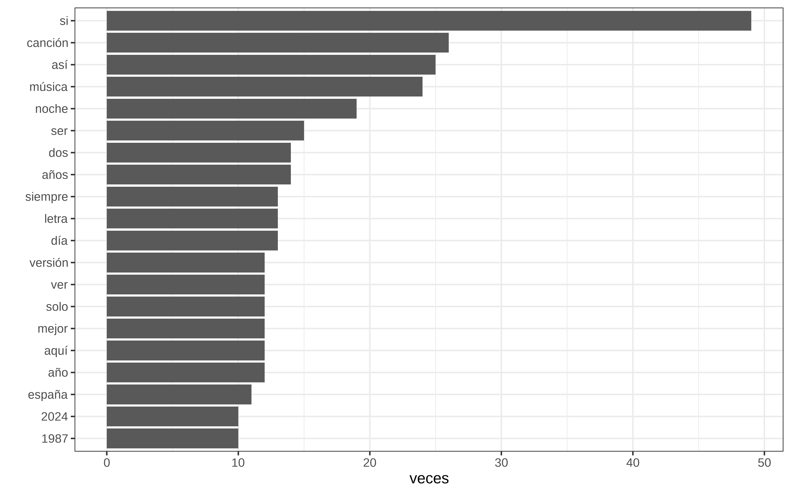
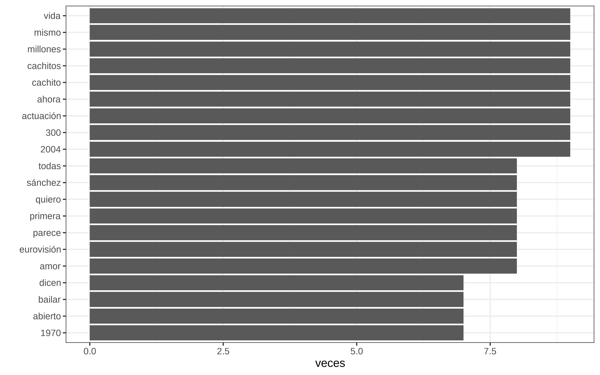
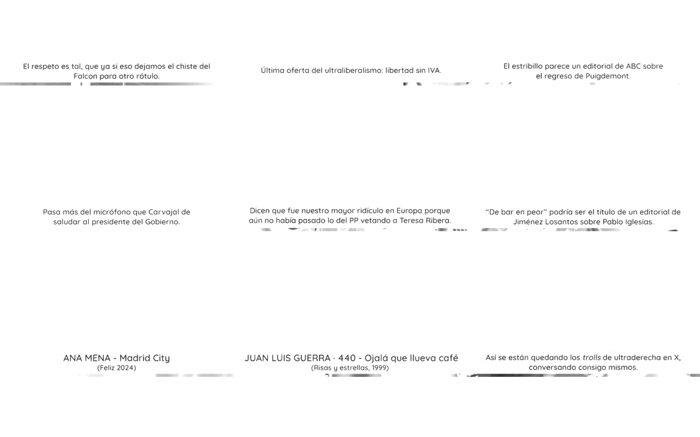
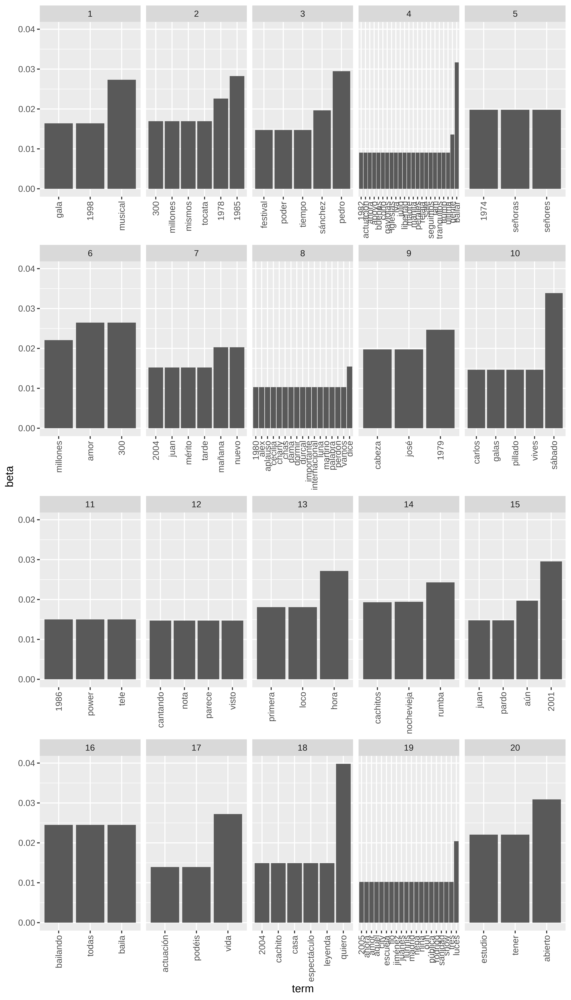
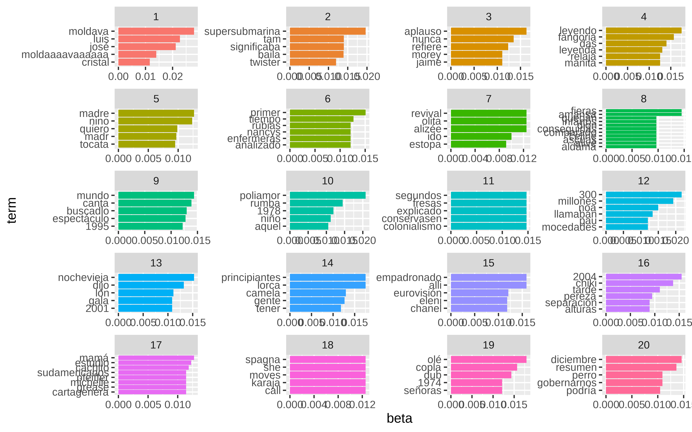
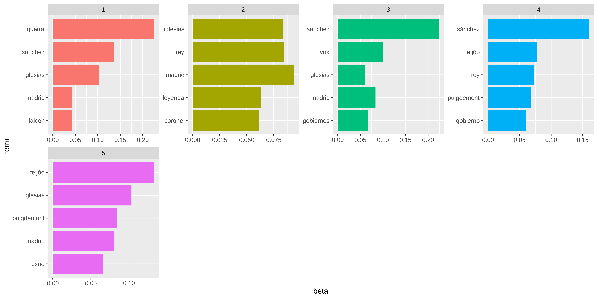
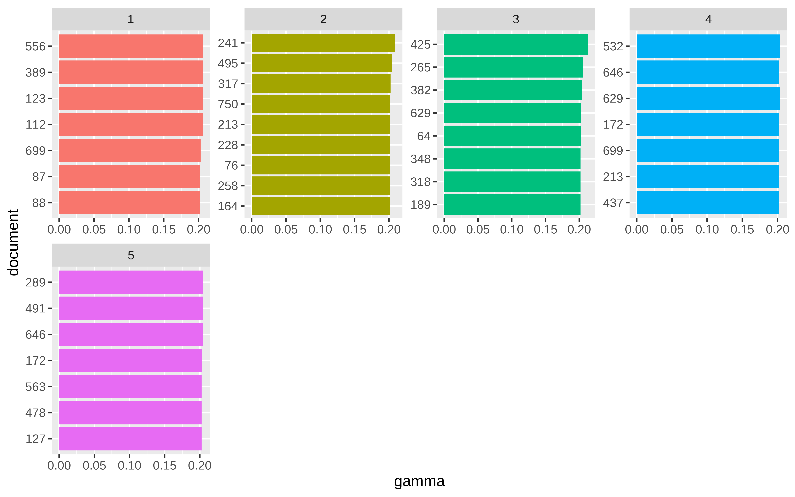
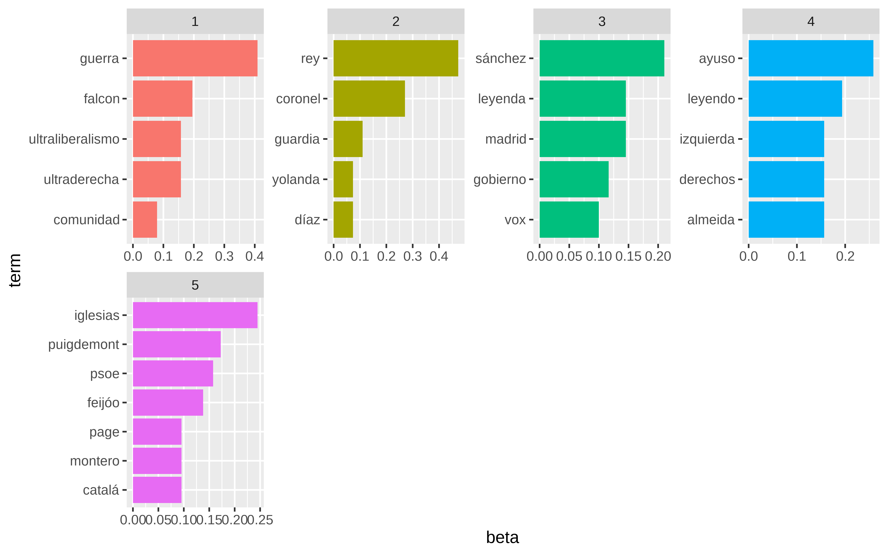

Cachitos 2024. Tercera parte
Anteriores entradas:
El csv con el texto de los rótulos para 2024 lo tenemos en este enlace
Vamos al lío
Librerías
Lectura de datos, y vistazo datos
Show the code
root_directory = "~/proyecto_cachitos/"
anno <- "2024"Leemos el csv. Uso DT y así podéis ver todos los datos o buscar cosas, por ejemplo puigdemont o errejón
Show the code
Pues nos valdría con esto para buscar términos polémicos.
Algo de minería de texto
Quitamos stopwords y tokenizamos de forma que tengamos cada palabra en una fila manteniendo de qué rótulo proviene
Show the code
to_remove <- c(tm::stopwords("es"),
"hello",
"110", "4","1","2","7","10","0","ñ","of",
"5","á","i","the","3", "n", "p",
"ee","uu","mm","ema", "zz",
"wr","wop","wy","x","xi","xl","xt",
"xte","yí", "your")
subtitulos_proces_one_word <- subtitulos_proces %>%
unnest_tokens(input = texto,
output = word) %>%
filter(! word %in% to_remove) %>%
filter(nchar(word) > 1)
dim(subtitulos_proces_one_word)
#> [1] 4561 5Show the code
DT::datatable(subtitulos_proces_one_word)Contar ocurrencias de cosas es lo más básico.
Show the code

Y como todos los años, una de las palabras más comunes es “canción” . ¿Y si añadimos las 20 palabras como stopword, junto con algunas como [“tan”, “sólo”,“así”, “aquí”, “hoy”] . La tarea de añadir palabras como stopwords requiere trabajo, tampoco nos vamos a parar tanto.
Show the code
(add_to_stop_words <- palabras_ordenadas_1 %>%
slice(1:25) %>%
pull(word) )
#> [1] "si" "canción" "así" "música" "noche" "ser" "años"
#> [8] "dos" "día" "letra" "siempre" "aquí" "año" "mejor"
#> [15] "solo" "ver" "versión" "españa" "1987" "2024" "bien"
#> [22] "cómo" "feliz" "menos" "2002"
to_remove <- unique(c(to_remove,
add_to_stop_words,
"tan",
"sólo",
"así",
"aquí",
"hoy",
"va"))
subtitulos_proces_one_word <- subtitulos_proces %>%
unnest_tokens(input = texto,
output = word) %>%
filter(! word %in% to_remove) %>%
filter(nchar(word) > 1)Show the code

También podemos ver ahora una nube de palabras
¿Polémicos?
Creamos lista de palabras polémicas
Show the code
palabras_polem <-
c(
"abascal",
"almeida",
"amnistía",
"ayuso",
"belarra",
"bloqueo",
"brusel",
"catal",
"ciudada",
"comunidad",
"constitucional",
"coron",
"crispación",
"democr",
"democracia",
"derech",
"díaz",
"dioni",
"errejon",
"extremadura",
"fach",
"falcon",
"fasc",
"franco",
"feij",
"feijóo",
"gobierno",
"guardia",
"guerra",
"iglesias",
"izquier",
"ley",
"madrid",
"manipulador",
"militares",
"minist",
"monarca",
"montero",
"oposición",
"page",
"pandem",
"polarización",
"polarizados",
"pp",
"principe",
"prisión",
"psoe",
"sumar",
"puigdemont",
"republic",
"rey",
"rufián",
"sánchez",
"sanz",
"tezanos",
"toled",
"transición",
"ultra",
"vicepre",
"vox",
"yolanda",
"zarzu",
"zarzuela"
)Y construimos una regex simple
Show the code
(exp_regx <- paste0("^",paste(palabras_polem, collapse = "|^")))
#> [1] "^abascal|^almeida|^amnistía|^ayuso|^belarra|^bloqueo|^brusel|^catal|^ciudada|^comunidad|^constitucional|^coron|^crispación|^democr|^democracia|^derech|^díaz|^dioni|^errejon|^extremadura|^fach|^falcon|^fasc|^franco|^feij|^feijóo|^gobierno|^guardia|^guerra|^iglesias|^izquier|^ley|^madrid|^manipulador|^militares|^minist|^monarca|^montero|^oposición|^page|^pandem|^polarización|^polarizados|^pp|^principe|^prisión|^psoe|^sumar|^puigdemont|^republic|^rey|^rufián|^sánchez|^sanz|^tezanos|^toled|^transición|^ultra|^vicepre|^vox|^yolanda|^zarzu|^zarzuela"Y nos creamos una variable para identificar si es palabra polémica
Show the code
subtitulos_proces_one_word <- subtitulos_proces_one_word %>%
mutate(polemica= str_detect(word, exp_regx))
subtitulos_polemicos <- subtitulos_proces_one_word %>%
filter(polemica) %>%
pull(n_fichero) %>%
unique()
subtitulos_polemicos
#> [1] "00000044.jpg.subtitulo.tif.txt" "00000071.jpg.subtitulo.tif.txt"
#> [3] "00000106.jpg.subtitulo.tif.txt" "00000111.jpg.subtitulo.tif.txt"
#> [5] "00000119.jpg.subtitulo.tif.txt" "00000140.jpg.subtitulo.tif.txt"
#> [7] "00000164.jpg.subtitulo.tif.txt" "00000165.jpg.subtitulo.tif.txt"
#> [9] "00000202.jpg.subtitulo.tif.txt" "00000218.jpg.subtitulo.tif.txt"
#> [11] "00000223.jpg.subtitulo.tif.txt" "00000273.jpg.subtitulo.tif.txt"
#> [13] "00000286.jpg.subtitulo.tif.txt" "00000300.jpg.subtitulo.tif.txt"
#> [15] "00000327.jpg.subtitulo.tif.txt" "00000372.jpg.subtitulo.tif.txt"
#> [17] "00000395.jpg.subtitulo.tif.txt" "00000413.jpg.subtitulo.tif.txt"
#> [19] "00000434.jpg.subtitulo.tif.txt" "00000435.jpg.subtitulo.tif.txt"
#> [21] "00000440.jpg.subtitulo.tif.txt" "00000451.jpg.subtitulo.tif.txt"
#> [23] "00000453.jpg.subtitulo.tif.txt" "00000495.jpg.subtitulo.tif.txt"
#> [25] "00000515.jpg.subtitulo.tif.txt" "00000543.jpg.subtitulo.tif.txt"
#> [27] "00000544.jpg.subtitulo.tif.txt" "00000547.jpg.subtitulo.tif.txt"
#> [29] "00000593.jpg.subtitulo.tif.txt" "00000627.jpg.subtitulo.tif.txt"
#> [31] "00000648.jpg.subtitulo.tif.txt" "00000661.jpg.subtitulo.tif.txt"
#> [33] "00000664.jpg.subtitulo.tif.txt" "00000729.jpg.subtitulo.tif.txt"
#> [35] "00000753.jpg.subtitulo.tif.txt" "00000819.jpg.subtitulo.tif.txt"
#> [37] "00000820.jpg.subtitulo.tif.txt" "00000833.jpg.subtitulo.tif.txt"
#> [39] "00000854.jpg.subtitulo.tif.txt" "00000861.jpg.subtitulo.tif.txt"
#> [41] "00000925.jpg.subtitulo.tif.txt" "00000975.jpg.subtitulo.tif.txt"
#> [43] "00000985.jpg.subtitulo.tif.txt" "00000998.jpg.subtitulo.tif.txt"
#> [45] "00001066.jpg.subtitulo.tif.txt" "00001074.jpg.subtitulo.tif.txt"
#> [47] "00001075.jpg.subtitulo.tif.txt" "00001094.jpg.subtitulo.tif.txt"
#> [49] "00001106.jpg.subtitulo.tif.txt" "00001141.jpg.subtitulo.tif.txt"
#> [51] "00001183.jpg.subtitulo.tif.txt" "00001246.jpg.subtitulo.tif.txt"
#> [53] "00001337.jpg.subtitulo.tif.txt"Y podemos ver en el texto original antes de tokenizar qué rótulos hemos considerado polémicos y qué texto
Show the code
subtitulos_proces %>%
filter(n_fichero %in% subtitulos_polemicos) %>%
arrange(n_fichero) %>%
pull(texto) %>%
unique()
#> [1] "si pensabais que lo del ventilador era solo una leyenda ahí está igualito al que tenéis en casa alargador incluido"
#> [2] "les ofrecemos en exclusiva un extracto de las últimas conversaciones entre sánchez y puigdemont"
#> [3] "el respeto es tal que ya si eso dejamos el chiste del falcon para otro rótulo"
#> [4] "volaré lo primero que piensa sánchez cuando tiene que ir a por el pan veis ya ha caído el del falcon"
#> [5] "mo leerás mañana en x nosotros también somos marioneta de sánchez bailando en la cuerda del gobierno"
#> [6] "se la ha relacionado con el rey juan carlos lo cual en términos estadísticos no tiene mucho e mérito"
#> [7] "si cambias ira por sanidad pública podría ser el himno de la comunidad de madrid"
#> [8] "última oferta del ultraliberalismo libertad sin iva"
#> [9] "algo nos dice que ser enfermera en la il guerra mundial no era así de divertido"
#> [10] "digan lo que digan uno de los grandes logros de las chicas es no necesitar ninguna guerra para ganar batallas"
#> [11] "apostamos lo que queráis a que no se pusieron ese nombre por emiliano garcía page"
#> [12] "el estribillo parece un editorial de abc sobre el regreso de puigdemont"
#> [13] "el verdadero rey campechano siempre fue el de la rumba"
#> [14] "si la rumba y el bakalao pudieron entenderse quizás aún haya esperanza para sánchez y feijóo"
#> [15] "el propósito para 2025 de pedro sánchez y begoña gómez es poder cantar este estribillo al menos un día"
#> [16] "tú estás leyendo él es leyenda"
#> [17] "en su documental descubrimos las luchas de poder internas loco mía predijo la izquierda española"
#> [18] "esta canción la subió pablo iglesias a stories para que la viese yolanda díaz"
#> [19] "enrique iglesias experiencia religiosa esto es espectáculo 1996"
#> [20] "momento romántico una pena que a almeida le haya pillado recogiendo un tendedero"
#> [21] "bárbara rey quién será palmarés 1976"
#> [22] "julio iglesias quijote aplauso 1982"
#> [23] "el mediterráneo de vox compuesta por el dúo dinámico para este solista estático"
#> [24] "si feijóo se operó de la vista es para que dejasen de confundirlos"
#> [25] "perales es la versión de julio iglesias que le caería bien a tu madre"
#> [26] "está tan rodeada de humo gris que parece madrid será por eso que dicen que madrid es spagno"
#> [27] "mira pedro sánchez al fondo hay una plataforma disponible puedes subir ahí tu documental"
#> [28] "pasa más del micrófono que carvajal de saludar al presidente del gobierno"
#> [29] "y hoy en la tertulia cristina pardo nuria roca juan del val y tamara falcó volverán a llamar dictador a sánchez"
#> [30] "dicen que fue nuestro mayor ridículo en europa porque aún no había pasado lo del pp vetando a teresa ribera"
#> [31] "es tan pegadiza que la oms estuvo a punto de declararla pandemia mundial"
#> [32] "de bar en peor podría ser el título de un editorial de jiménez losantos sobre pablo iglesias"
#> [33] "la ladilla rusa amenaza con atacar el testículo occidental desatando la iii guerra inguinal"
#> [34] "el cariño se acabó como a vox y al pp en los gobiernos autonómicos"
#> [35] "si te haces un único propósito de año nuevo que sea este si estás leyendo esto ya vas por buen camino"
#> [36] "ana mena madrid city feliz 2024"
#> [37] "nos dicen por el pinganillo que ayuso la tiene de tono de llamada y que le devolvamos el pinganillo a isabel"
#> [38] "estaba dedicada a la mtv cuando la m significaba música era más o menos cuando la s de psoe significaba socialista"
#> [39] "lleva décadas luciendo igual y cantando lo mismo montero le pone de ejemplo de la senda de estabilidad"
#> [40] "la versión cañí de the police es el teniente coronel de la guardia civil que se puso a cantar en unos premios"
#> [41] "por 25 pesetas cosas que no se tocan este amor la sanidad pública los derechos el aborto las siglas lgtbiq"
#> [42] "juan luis guerra 440 ojalá que llueva café risas y estrellas 1999"
#> [43] "si buscas artículos de qué fue de los niños de regaliz están justo encima de qué fue del psoe madrileño"
#> [44] "la lista de cosas que el novio de ayuso se quiso desgravar como gastos de empresa"
#> [45] "ni una mala nota salió de su vodka pacharán los años y ella martini intacta su leyenda"
#> [46] "aquest rétol está en catalá perqué avui no hi ha censura a la tv pública per cert la la la es diu exactament igual"
#> [47] "hasta este año los recitales de serrat eran lo único que entendíamos por concierto catalán"
#> [48] "esa niña no ha vuelto a escuchar nada por el oído izquierdo"
#> [49] "la letra resume el subtexto de las dos cartas a la ciudadanía de pedro sánchez"
#> [50] "no es padre de su último hijo por la misma razón que feijóo no es presidente del gobierno porque no quiere"
#> [51] "en interior aún están estudiando la letra para intentar pillar el truco y entender cómo se les escapó puigdemont"
#> [52] "así se están quedando los trolls de ultraderecha en x conversando consigo mismos"
#> [53] "este cachito grita coronel tapioca por los cuatro costados"Escribimos en un fichero los subtítulos polémicos.
Y podemos ver los fotogramas.
Show the code
# identificamos nombre del archivo jpg con los rótulos polémicos
polemica_1_fotogramas <- unique(substr(subtitulos_polemicos, 1,9))
head(polemica_1_fotogramas)
#> [1] "00000044." "00000071." "00000106." "00000111." "00000119." "00000140."
# creamos la ruta completa donde están
polemica_1_fotogramas_full <- paste0(str_glue("{root_directory}video/{anno}_jpg/"), polemica_1_fotogramas, "jpg")
# añadimos sufijo subtitulo.tif para tenr localizado la imagen que tiene solo los rótulos
subtitulos_polemicos_1_full <- paste0(polemica_1_fotogramas_full,".subtitulo.tif")Con la función image_read del paquete magick leemos las imágenes polémicas y los rótulos
Show the code
subtitulos_polemicos_img[[24]]Show the code
fotogramas_polemicos_img[[24]]Podemos ver una muestra de algunos de ellos.
Show the code
set.seed(1976)
indices <- sort(sample(1:length(fotogramas_polemicos_img), 9))
lista_fotogram_polemicos <- lapply(fotogramas_polemicos_img[indices], grid::rasterGrob)
gridExtra::grid.arrange(grobs=lista_fotogram_polemicos )
Y el recorte de los subtítulos que hicimos enla primera entrega.
Show the code
lista_subtitulos <- lapply(subtitulos_polemicos_img[indices], grid::rasterGrob)
gridExtra::grid.arrange(grobs=lista_subtitulos)
Pues no sé yo si hay sesgo o no. A mi me parece que se meten un poco más con la derecha que con la izquierda, pero lo mismo es que da más juego.
Tópicos
Hacemos algo de topic modelling a la antigua usanza, sin llm’s ni nada de eso. Pasé los rótulos originales por un par de llm’s sin obtener resultados claros, el sarcasmo aún le cuesta
Ya aviso que con tan pocos “documentos”, y siendo tan cortos cada rótulo, es muy probable que no salga mucho..
Tópicos usando conteo de palabras.
Contamos palabras con 3 caracteres o más.
Guardamos la variable name que nos indica en qué rótulo ha aparecido
Show the code
word_counts <- subtitulos_proces_one_word %>%
group_by(name, word) %>%
count(sort=TRUE) %>%
mutate(ncharacters = nchar(word)) %>%
filter(
ncharacters >= 3) %>%
select(-ncharacters) %>%
ungroup()
length(unique(word_counts$name))
#> [1] 636
head(word_counts, 15)
#> # A tibble: 15 × 3
#> name word n
#> <dbl> <chr> <int>
#> 1 368 chiki 4
#> 2 521 canta 3
#> 3 28 bastaban 2
#> 4 37 bailar 2
#> 5 42 baila 2
#> 6 53 reparten 2
#> 7 58 blu 2
#> 8 70 baila 2
#> 9 111 dub 2
#> 10 123 digan 2
#> 11 138 español 2
#> 12 148 olé 2
#> 13 155 morat 2
#> 14 197 frontera 2
#> 15 203 revival 2Ahora convertimos este data.frame a un DocumentTermMatrix
Show the code
# usamos como peso la TermFrequency de la palabra
rotulos_dtm <- word_counts %>%
cast_dtm(name, word, n, weighting = tm::weightTf)
rotulos_dtm
#> <<DocumentTermMatrix (documents: 636, terms: 2770)>>
#> Non-/sparse entries: 4036/1757684
#> Sparsity : 100%
#> Maximal term length: 17
#> Weighting : term frequency (tf)Podríamos haberlo visto en forma de filas = palabras y columnas = rótulo
Show the code
word_counts %>%
cast_dfm(word, name, n)
#> Document-feature matrix of: 2,770 documents, 636 features (99.77% sparse) and 0 docvars.
#> features
#> docs 368 521 28 37 42 53 58 70 111 123
#> chiki 4 0 0 0 0 0 0 0 0 0
#> canta 0 3 0 0 0 0 0 0 0 0
#> bastaban 0 0 2 0 0 0 0 0 0 0
#> bailar 0 0 0 2 0 0 0 0 0 0
#> baila 1 0 0 0 2 0 0 2 0 0
#> reparten 0 0 0 0 0 2 0 0 0 0
#> [ reached max_ndoc ... 2,764 more documents, reached max_nfeat ... 626 more features ]Vamos a ver si sale algo haciendo un LDA (Latent Dirichlet Allocation)
Considero 20 tópicos porque sí. El que quiera elegir con algo más de criterio que se mire esto
Show the code
# Cons
rotulos_lda <- LDA(rotulos_dtm, k = 20, control = list(seed = 1234))
rotulos_lda
#> A LDA_VEM topic model with 20 topics.
rotulos_lda_td <- tidy(rotulos_lda)
rotulos_lda_td
#> # A tibble: 55,400 × 3
#> topic term beta
#> <int> <chr> <dbl>
#> 1 1 chiki 2.25e-215
#> 2 2 chiki 2.63e-215
#> 3 3 chiki 1.33e-215
#> 4 4 chiki 8.80e-216
#> 5 5 chiki 1.37e-215
#> 6 6 chiki 7.73e-216
#> 7 7 chiki 1.56e-215
#> 8 8 chiki 1.68e-215
#> 9 9 chiki 1.35e-215
#> 10 10 chiki 1.28e-215
#> # ℹ 55,390 more rows
# se suele ordenar por beta que ahora mismo no recuerdo que era,
top_terms <- rotulos_lda_td %>%
group_by(topic) %>%
top_n(3, beta) %>%
ungroup() %>%
arrange(topic, -beta)
top_terms
#> # A tibble: 126 × 3
#> topic term beta
#> <int> <chr> <dbl>
#> 1 1 musical 0.0273
#> 2 1 1998 0.0164
#> 3 1 gala 0.0164
#> 4 2 1985 0.0282
#> 5 2 1978 0.0226
#> 6 2 millones 0.0169
#> 7 2 300 0.0169
#> 8 2 tocata 0.0169
#> 9 2 mismos 0.0169
#> 10 3 pedro 0.0295
#> # ℹ 116 more rows
top_terms %>%
mutate(term = reorder_within(term, beta, topic)) %>%
ggplot(aes(term, beta)) +
geom_bar(stat = "identity") +
scale_x_reordered() +
facet_wrap(~ topic, scales = "free_x") +
theme(axis.text.x = element_text(angle = 90, vjust = 0.5, hjust=1))
Pues la verdad es que yo no veo nada interesante
Tópicos usando tfidf como peso
Vamos a probar usando tfidf
Como la función LDA no permite usar un DocumentTermMatrix que se haya construido con cast_dtm y usando como parámetro de weighting el peso tm::weightTfIdf nos construimos los datos de otra forma.
Show the code
tf_idf_data <- subtitulos_proces_one_word %>%
filter(nchar(word)>2) %>%
group_by(name,word) %>%
summarise(veces_palabra = n()) %>%
bind_tf_idf(word, name, veces_palabra) %>%
ungroup()
tf_idf_data %>%
arrange(desc(veces_palabra)) %>%
head()
#> # A tibble: 6 × 6
#> name word veces_palabra tf idf tf_idf
#> <dbl> <chr> <int> <dbl> <dbl> <dbl>
#> 1 368 chiki 4 0.4 6.46 2.58
#> 2 521 canta 3 0.429 5.36 2.30
#> 3 28 bastaban 2 0.25 6.46 1.61
#> 4 37 bailar 2 0.333 4.66 1.55
#> 5 42 baila 2 0.286 5.36 1.53
#> 6 53 reparten 2 0.286 6.46 1.84Para cada palabra tenemos su tf_idf dentro de cada rótulo en el que aparece
Como de nuevo LDA solo acepta peso con valores enteros, pues simplemente multiplicamos por 100 el tf_idf y redondeamos
Show the code
result <- tidy(lda_model_long_1, 'beta')
result %>%
group_by(topic) %>%
top_n(5, beta) %>%
ungroup() %>%
arrange(topic, -beta) %>%
mutate(term = reorder(term, beta)) %>%
ggplot(aes(term, beta, fill = factor(topic))) +
geom_col(show.legend = FALSE) +
facet_wrap(~ topic, scales = "free", ncol = 4) +
coord_flip()
y como suele pasar con tan poco documentos no suele salir nada concluyente
Sólo con los rótulos polémicos
Asumiendo que parece que no tiene sentido hacer topicmodelling sobre estos datos, me picó la curiosidad de ver qué pasaba si sólo usaba los rótulos polémicos.
Show the code
tf_idf_data_polem <- subtitulos_proces_one_word %>%
filter(nchar(word)>2, polemica == TRUE) %>%
group_by(name,word) %>%
summarise(veces_palabra = n()) %>%
bind_tf_idf(word, name, veces_palabra) %>%
ungroup()
tf_idf_data_polem %>%
arrange(desc(veces_palabra)) %>%
head()
#> # A tibble: 6 × 6
#> name word veces_palabra tf idf tf_idf
#> <dbl> <chr> <int> <dbl> <dbl> <dbl>
#> 1 317 madrid 2 1 2.85 2.85
#> 2 21 leyenda 1 1 2.85 2.85
#> 3 34 puigdemont 1 0.5 2.85 1.43
#> 4 34 sánchez 1 0.5 1.87 0.936
#> 5 57 falcon 1 1 3.26 3.26
#> 6 59 falcon 1 0.5 3.26 1.63Topic modelling usando conteo de palabras
Show the code

Y bueno, algún tópico con “sánchez” “feijóo” y el “rey”. pero nada muy claro
Show the code
result_documento_polem <- tidy(lda_model_long_polem, 'gamma')
result_documen_polem_top <-
result_documento_polem %>%
group_by(topic) %>%
top_n(7, gamma) %>%
ungroup()
result_documen_polem_top %>%
arrange(topic, -gamma) %>%
mutate(document = reorder(document, gamma)) %>%
ggplot(aes(document, gamma, fill = factor(topic))) +
geom_col(show.legend = FALSE) +
facet_wrap(~ topic, scales = "free", ncol = 4) +
coord_flip()
Veamos algunos subtítulos del tópico 1
Show the code
topico_uno <- result_documen_polem_top |>
filter(topic == 1) |>
pull(document)
subtitulos_proces %>%
filter(name %in% as.numeric(topico_uno)) %>%
pull(texto)
#> [1] "si cambias ira por sanidad pública podría ser el himno de la comunidad de madrid"
#> [2] "última oferta del ultraliberalismo libertad sin iva"
#> [3] "algo nos dice que ser enfermera en la il guerra mundial no era así de divertido"
#> [4] "digan lo que digan uno de los grandes logros de las chicas es no necesitar ninguna guerra para ganar batallas"
#> [5] "la ladilla rusa amenaza con atacar el testículo occidental desatando la iii guerra inguinal"
#> [6] "juan luis guerra 440 ojalá que llueva café risas y estrellas 1999"
#> [7] "así se están quedando los trolls de ultraderecha en x conversando consigo mismos"Veamos más documentos relacionados con este tópico
Show the code
top_10_topic3 <- result_documento_polem %>%
group_by(topic) %>%
top_n(12, gamma) %>%
filter(topic==1) %>%
pull(document)
subtitulos_proces %>%
filter(name %in% top_10_topic3) %>%
pull(texto)
#> [1] "el respeto es tal que ya si eso dejamos el chiste del falcon para otro rótulo"
#> [2] "volaré lo primero que piensa sánchez cuando tiene que ir a por el pan veis ya ha caído el del falcon"
#> [3] "si cambias ira por sanidad pública podría ser el himno de la comunidad de madrid"
#> [4] "última oferta del ultraliberalismo libertad sin iva"
#> [5] "algo nos dice que ser enfermera en la il guerra mundial no era así de divertido"
#> [6] "digan lo que digan uno de los grandes logros de las chicas es no necesitar ninguna guerra para ganar batallas"
#> [7] "enrique iglesias experiencia religiosa esto es espectáculo 1996"
#> [8] "julio iglesias quijote aplauso 1982"
#> [9] "perales es la versión de julio iglesias que le caería bien a tu madre"
#> [10] "de bar en peor podría ser el título de un editorial de jiménez losantos sobre pablo iglesias"
#> [11] "la ladilla rusa amenaza con atacar el testículo occidental desatando la iii guerra inguinal"
#> [12] "juan luis guerra 440 ojalá que llueva café risas y estrellas 1999"
#> [13] "hasta este año los recitales de serrat eran lo único que entendíamos por concierto catalán"
#> [14] "así se están quedando los trolls de ultraderecha en x conversando consigo mismos"Topic modelling usando tf_idf
Puede verse algo más claro usando tf-idf
Show the code
Show the code

IA’s
Alguna prueba con IA, subiendo los rótulos y preguntando.
Te voy a subir un csv dónde cada fila corresponde a un rótulo del programa Cachitos nochevieja de rtve. en la columna texto está el comentario. Podrías hacer varias cosas
1- Identificar rótulos polémicos
2- Se meten más con el gobierno o con la oposición '
3- Un topic modelling por si hubiera patrones .
ChatGPT Plus
ChatGPT
¡Claro! Sube el archivo CSV y me pongo manos a la obra. Analizaré el contenido según las tareas que planteas:
Identificar rótulos polémicos: Esto podría incluir identificar lenguaje ofensivo, temas sensibles o comentarios polarizantes.
Análisis político: Determinar si hay más comentarios críticos hacia el gobierno o hacia la oposición.
Topic modeling: Utilizaré técnicas como LDA (Latent Dirichlet Allocation) para identificar patrones temáticos en los rótulos.
¡Adelante, espero tu archivo!
Tú dijiste:
2024 Txt Unido
No se puede mostrar la visualización
ChatGPT Plus
ChatGPT
El archivo tiene las siguientes columnas relevantes para el análisis:
texto: Contiene el comentario o rótulo, que será clave para las tareas propuestas.
Otras columnas como name, n_fichero, n_caracteres y distancia no parecen relevantes para identificar polémica o patrones temáticos directamente.
Voy a proceder con las tareas solicitadas:
Identificar rótulos polémicos (analizando el contenido de la columna texto).
Determinar si los comentarios se dirigen más hacia el gobierno o la oposición.
Realizar un análisis de topic modeling.
Comienzo con la identificación de rótulos polémicos.
Comentarios Controversiales
He identificado los comentarios más polarizantes en función de la polaridad del texto. Te he mostrado una tabla con aquellos rótulos que tienen una polaridad emocional fuerte, positiva o negativa. Ahora paso a analizar si los comentarios se meten más con el gobierno o con la oposición.
Resumen Del Análisis Político
He analizado los comentarios para identificar si tienen un sesgo hacia el gobierno o la oposición. La mayoría de los rótulos son neutrales, pero algunos mencionan al gobierno o a la oposición. He presentado los resultados en un resumen visual para que puedas consultarlo. Ahora procederé con el análisis de topic modeling para encontrar patrones temáticos en los rótulos.
Parece que hubo un error con el procesamiento del texto debido a la configuración del idioma para las palabras vacías. Ajustaré el análisis para evitar este problema y continuar con el modelado temático.
Análisis De Topics En Rótulos
El análisis de topic modeling ha identificado cinco temas principales en los rótulos, cada uno con sus palabras clave más relevantes. Te he mostrado los resultados en una tabla para que puedas revisarlos.
Si necesitas profundizar en algún tema o realizar algún análisis adicional, ¡avísame!
Tú dijiste:
¿Cuáles son los temas más polémicos?
ChatGPT Plus
ChatGPT
Para identificar los temas más polémicos, combinaré los resultados del análisis de polaridad (comentarios más polarizantes) con los temas generados en el topic modeling. Esto permitirá determinar cuáles de los temas contienen una mayor proporción de comentarios con fuerte polaridad emocional.
Voy a calcular esto y mostrarte los resultados.
Parece que hubo un problema al asignar las palabras clave a los temas más polémicos. Revisaré el índice y ajustaré el análisis para garantizar que los temas y sus palabras clave sean correctamente interpretados. Un momento.
Temas Más Polémicos
He identificado los temas más polémicos basándome en los comentarios con alta polaridad emocional y sus asignaciones temáticas. Te he mostrado una tabla que incluye:
El tema identificado.
La cantidad de comentarios controvertidos asociados a cada tema.
Las palabras clave más representativas de cada tema.
Si necesitas más detalles o un análisis adicional, ¡házmelo saber!
Tú dijiste:
para el análisis quita las stopwords
ChatGPT Plus
ChatGPT
Temas Más Polémicos Sin Stopwords
He actualizado el análisis eliminando las stopwords para que los temas reflejen palabras más significativas. Te he mostrado una tabla con:
Los temas más polémicos.
La cantidad de comentarios controvertidos en cada tema.
Las palabras clave representativas tras eliminar las stopwords.
Si quieres ajustar el análisis o necesitas algo más, ¡dímelo!
Tú dijiste:
hazme un resumen de tus hallazgos
ChatGPT Plus
ChatGPT
Aquí tienes un resumen de los hallazgos tras analizar los rótulos del programa Cachitos Nochevieja:
1. Identificación de rótulos polémicos
Se han identificado comentarios polarizantes analizando la polaridad emocional del texto.
Los comentarios polémicos se caracterizan por un tono fuerte, tanto positivo como negativo, en relación con ciertos temas o expresiones.
2. Análisis político
La mayoría de los rótulos son neutrales respecto a su inclinación política.
Entre los comentarios con sesgo, 5 mencionan al gobierno y 3 a la oposición, lo que indica un equilibrio leve hacia las críticas al gobierno.
3. Modelado temático (Topic Modeling)
Se identificaron 5 temas principales en los rótulos, cada uno representado por las palabras más relevantes.
Los temas más polémicos incluyen aquellos relacionados con expresiones personales, momentos históricos (e.g., años específicos), y observaciones humorísticas o críticas que generan reacciones emocionales.
4. Temas más polémicos
Los temas con mayor cantidad de comentarios controvertidos están relacionados con:
Topic 4: Comentarios de contraste o juicios valorativos (e.g., "esto", "fue", "siempre", "menos").
Topic 5: Expresiones de celebración o reflexiones (e.g., "hora", "feliz", "canción", "también").
Otros temas incluyen referencias a nombres, canciones y situaciones que despiertan opiniones polarizadas.
Conclusiones
Los rótulos más polémicos parecen surgir de observaciones humorísticas, críticas implícitas o referencias culturales que tocan temas sensibles.
Aunque la política no domina, los comentarios con sesgo están ligeramente inclinados hacia referencias al gobierno.
El análisis temático muestra que los patrones más relevantes están relacionados con expresiones generales, referencias temporales, y juicios o emociones personales.
Si necesitas profundizar en algún punto o realizar otro tipo de análisis, ¡avísame!
Tú dijiste:
y hay sesgo n contra del rey ?
ChatGPT Plus
ChatGPT
Voy a analizar si hay sesgo contra el rey en los rótulos. Buscaré menciones específicas relacionadas con el rey o la monarquía (como "rey", "monarquía", "corona", "Felipe VI", etc.) y determinaré si tienen polaridad negativa. Un momento mientras realizo este análisis.
Rótulos Relacionados Con La Monarquía
He analizado los rótulos en busca de menciones a la monarquía (como "rey", "monarquía", "Felipe VI", etc.) y sus polaridades:
Rótulos encontrados: Hay menciones relacionadas con la monarquía en 4 rótulos.
Distribución del sentimiento: Todas las menciones tienen un sentimiento neutral, sin indicios de sesgo negativo o polarización.
Te he mostrado los rótulos relevantes para que puedas revisarlos. Si necesitas algún análisis más específico, ¡házmelo saber!
Tú dijiste:
y se meten mucho con Errejón ?
ChatGPT Plus
ChatGPT
Voy a buscar menciones relacionadas con Íñigo Errejón (como "Errejón", "Íñigo Errejón", "Más País", etc.) en los rótulos y analizar su polaridad para determinar si hay un patrón significativo en los comentarios hacia él. Un momento mientras realizo este análisis.
Rótulos Relacionados Con Errejón
He analizado los rótulos en busca de menciones relacionadas con Íñigo Errejón:
Rótulos encontrados: Hay 2 menciones relacionadas con Errejón.
Distribución del sentimiento: Ambos rótulos tienen un sentimiento neutral, sin indicios de sesgo negativo o polarización.
Te he mostrado los rótulos específicos en una tabla para que puedas revisarlos. Si quieres investigar algo más, ¡dímelo!
Tú dijiste:
intenta analizarlo todo pero teniendo en cuenta que es un programa sarcástico
ChatGPT Plus
ChatGPT
Para ajustar el análisis considerando que Cachitos de Nochevieja es un programa sarcástico, necesito reinterpretar las métricas de polaridad y sesgo desde el prisma del humor, la ironía y el contexto. Esto implica:
Reevaluar la polaridad:
Un comentario sarcástico puede ser percibido como negativo según la polaridad, pero el contexto lo convierte en humorístico. Ajustaré el análisis para dar más peso a palabras o frases que suelen asociarse al sarcasmo.
Identificar sarcasmo político:
Analizar si las menciones al gobierno, oposición, o figuras públicas como el rey o Errejón tienen un tono irónico. Esto requiere identificar expresiones que sean irónicas, exageradas o con doble sentido.
Revisar los temas más polémicos:
Evaluar si los temas identificados en el modelado temático contienen patrones de sarcasmo o crítica humorística.
Voy a recalibrar el análisis con estas consideraciones y mostrarte los resultados. Un momento.
Resumen De Sarcasmo En Temas Y Menciones
Sarcasmo En Menciones A Monarquía
Sarcasmo En Menciones A Errejón
Tras ajustar el análisis para considerar el tono sarcástico de Cachitos de Nochevieja, aquí están los hallazgos principales:
1. Sarcasmo en temas generales
El sarcasmo se detectó en una proporción muy baja de comentarios, con una tasa de sarcasmo máxima de 0.8% en los temas analizados.
Temas con sarcasmo detectado:
Topic 2 y Topic 4 mostraron indicios de comentarios sarcásticos, aunque en volúmenes pequeños.
2. Menciones a la monarquía
De los 4 comentarios relacionados con la monarquía, ninguno fue identificado como sarcástico según los patrones detectados.
Las menciones son mayoritariamente neutrales en su polaridad y no contienen ironía explícita.
3. Menciones a Íñigo Errejón
De los 2 comentarios que mencionan a Errejón, tampoco se detectó sarcasmo explícito.
Ambos comentarios también tienen polaridad neutral, lo que sugiere que, al menos en este contexto, no hubo ataques irónicos o humorísticos destacados.
Conclusiones generales
Aunque el sarcasmo es una parte fundamental del tono de Cachitos, parece estar distribuido de manera dispersa y no se concentra específicamente en temas como la monarquía o Errejón.
Los comentarios relacionados con estos temas tienden más hacia la neutralidad, sin un sesgo humorístico o polarizante claro.
Si deseas afinar el análisis o enfocarlo en algún aspecto específico, ¡avísame!
Tú dijiste:
y con respecto a Feijóo, Sánchez o Begoña Gómez?
ChatGPT Plus
ChatGPT
Hubo un problema al procesar las menciones con las etiquetas de sentimiento. Ajustaré el análisis para corregirlo y ofrecerte los resultados. Un momento.
Resumen De Sentimiento Por Figura
Aquí tienes el análisis de las menciones a Feijóo, Sánchez y Begoña Gómez en los rótulos:
Resumen de Sentimientos
Begoña Gómez:
2 menciones detectadas, todas con sentimiento neutral.
Feijóo:
3 menciones, todas con sentimiento neutral.
Sánchez:
7 menciones, también todas con sentimiento neutral.
Conclusión
No se detectaron sesgos evidentes o comentarios sarcásticos en las menciones a estas figuras. Los rótulos parecen mantener un tono neutral hacia estos personajes, al menos en las menciones explícitas.
Coda
Pues poco más, no he comentado muchos los tópicos este año, porque prefiero que cada uno trastee con el código y vea que le sale.
Sin más, os deseo un Feliz 2025 a todos y a ver si el año que viene sigo con tiempo para hacer estas cosas.